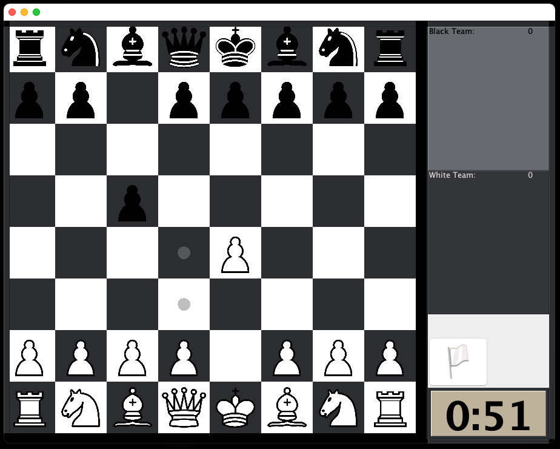
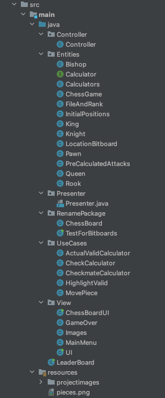

Chess Engine Bitboards
This project, initially started as an end-of-year project for CSC207 at UofT, is focused on creating a chess engine using bitboards.
Given that there are 64 bits in a long datatype in Java, and perfectly 64 squares on a regular chessboard,
this was an efficient way to make calculations for valid piece move calculations and piece movement & capture using bitwise operations.
This project is built with Java and Java Swing for the GUI, and employs Clean Architecture principles and the Model-View-Controller framework.

Here is a look at how we organized the packages.
